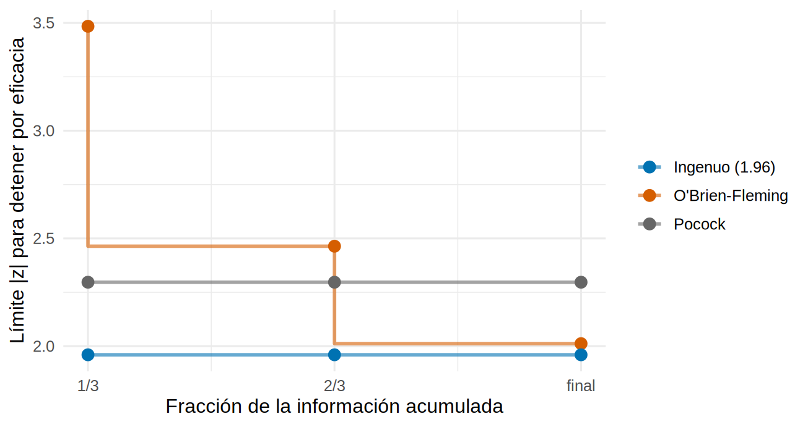

library(tidyverse)
library(pwr)
source("R/funciones_extra_a.R") # num(), pct()
source("R/funciones_cap20.R")
theme_set(theme_minimal(base_size = 12))
rpact_ok <- requireNamespace("rpact", quietly = TRUE)
# Piloto SIMULADO (Cap. 11) con su "oráculo" (verdad conocida)
eca <- read_csv("Bases/eca_bicarbonato.csv", show_col_types = FALSE) |>
left_join(read_csv("Bases/eca_bicarbonato_oraculo.csv", show_col_types = FALSE), by = "id")
sigma <- 2.6 # DE del cambio de TFGe a 12 meses (20.1)Pérdidas, análisis interinos y cómo reportar el tamaño de muestra
Nota🩺 Escenario
Ya tienes la cifra de pacientes. Antes de entregar el protocolo te quedan tres preguntas del comité de ética: «¿qué pasa si muchos no toman el fármaco o abandonan?», «¿vais a mirar los datos a mitad del ensayo y parar si es evidente?» y «¿cómo justificáis el tamaño de muestra en el protocolo?». Además un colega propone cerrar el reclutamiento «cuando lleguemos a 100 por grupo, que es lo que podemos pagar». Este subcapítulo cierra el cálculo: ajustar por pérdidas y no adherencia, repartir el error tipo I entre los análisis interinos, redactar el párrafo y evitar los errores clásicos.
Lo que vamos a hacer
- Ver cómo la no adherencia diluye el efecto por intención de tratar (ITT) y cuánto n cuesta.
- Comparar análisis interinos con límites O’Brien-Fleming y Pocock (
rpact, y una versión propia ejecutable). - Redactar el párrafo de tamaño de muestra y revisar los errores que más se repiten.
Paso 1: el efecto que de verdad se mide es el diluido
El análisis principal de un ensayo es por intención de tratar (ITT, 11.2): se compara según el brazo asignado. Si una parte de los asignados al fármaco no lo toma, o parte del placebo termina tomándolo (contaminación o cruce), la diferencia ITT se diluye. Con una fracción a de adherentes en el brazo activo y una fracción c de contaminados en el placebo:
\[ \delta_{ITT} = (a - c)\,\delta_{\text{quien toma el fármaco}} \qquad\Rightarrow\qquad n_{ITT} = \frac{n}{(a - c)^2} \]
Como n depende del cuadrado del efecto, la dilución cuesta mucho. En el ensayo simulado del libro conocemos la verdad:
act <- filter(eca, brazo == "Bicarbonato")
a <- mean(act$adhiere) # fracción que toma el fármaco en el brazo activo
efecto_cumplidor <- mean(act$efecto_ind[act$adhiere == 1]) # mejora a 12 meses en quien lo toma (mL/min/1.73 m2)
efecto_itt <- a * efecto_cumplidor # efecto ITT esperado (sin contaminación)
c(adherencia = a, efecto_en_cumplidores = efecto_cumplidor, efecto_itt = efecto_itt,
n_si_todos_cumplieran = n_medias(efecto_cumplidor, sigma)$n1, n_itt = n_medias(efecto_itt, sigma)$n1) |> round(2) adherencia efecto_en_cumplidores efecto_itt
0.72 0.92 0.66
n_si_todos_cumplieran n_itt
127.00 247.00 Qué vemos. El 72 % del brazo activo toma el fármaco y los que lo toman ganan 0.92 mL/min/1.73 m² a 12 meses: el efecto ITT es de 0.66. Si calculas el n con el efecto en cumplidores (127 por grupo) pero el análisis es ITT, el ensayo quedará corto; el n correcto es 247, es decir, 1.9 veces más. Con distintas adherencias y contaminaciones, el factor de inflación 1/(a − c)² es:
expand_grid(adherencia = c(1, 0.90, 0.75, 0.60), contaminacion = c(0, 0.10, 0.20)) |>
mutate(factor = 1 / (adherencia - contaminacion)^2) |>
pivot_wider(names_from = contaminacion, values_from = factor, names_prefix = "contaminación ") |>
mutate(across(where(is.numeric) & !adherencia, \(x) round(x, 2)))# A tibble: 4 × 4
adherencia `contaminación 0` `contaminación 0.1` `contaminación 0.2`
<dbl> <dbl> <dbl> <dbl>
1 1 1 1.23 1.56
2 0.9 1.23 1.56 2.04
3 0.75 1.78 2.37 3.31
4 0.6 2.78 4 6.25Con 75 % de adherencia y 10 % de contaminación hay que multiplicar el n por 2.4. Lo comprobamos con potencia_sim() (de 20.5): 1 000 ensayos con la adherencia y el efecto del piloto, analizados por ITT (brazo asignado). Comparamos el n «ingenuo» (efecto en cumplidores) con el n ITT, ambos sin pérdidas para aislar la dilución:
an_itt <- function(d) { # ITT: se compara por el brazo ASIGNADO
m <- lm(I(tfg12 - tfg0) ~ brazo, data = d)
c(p = summary(m)$coefficients["brazo", 4], est = coef(m)[["brazo"]])
}
gen_dil <- \(n) generar_tfg(n, efecto = efecto_cumplidor, adherencia = a)
dilucion <- bind_rows(
`n ingenuo (efecto en cumplidores)` = potencia_sim(gen_dil, an_itt, n_medias(efecto_cumplidor, sigma)$n1, 1000, semilla = 8),
`n ITT (efecto diluido)` = potencia_sim(gen_dil, an_itt, n_medias(efecto_itt, sigma)$n1, 1000, semilla = 8), .id = "calculo")
dilucion |> select(calculo, n, potencia, ic_inf, ic_sup, est_media) |> mutate(across(where(is.numeric), \(x) round(x, 3)))# A tibble: 2 × 6
calculo n potencia ic_inf ic_sup est_media
<chr> <dbl> <dbl> <dbl> <dbl> <dbl>
1 n ingenuo (efecto en cumplidores) 127 0.502 0.471 0.533 0.658
2 n ITT (efecto diluido) 247 0.789 0.762 0.814 0.651El n ingenuo da una potencia de solo 50 %; el n ITT recupera 79 %. La estimación ITT media es 0.65, cerca del efecto ITT teórico (0.66): la simulación confirma la fórmula. Rescatar el efecto en cumplidores con un análisis «por protocolo» no es una opción: rompe la aleatorización (11.2). El camino válido es el análisis por CACE (11.6), pero el tamaño se calcula para el análisis principal.
Paso 2: pérdidas, adherencia y plan final
Las pérdidas se suman a la no adherencia: primero el n ITT, luego se divide entre (1 − pérdidas) (20.2). Con la tasa de pérdida a 12 meses del piloto:
n_itt perdida n_por_grupo total
247.000 0.133 285.000 570.000 Verificamos el plan completo (adherencia, efecto en cumplidores y pérdidas al azar), con el análisis ITT:
gen_plan <- \(n) generar_tfg(n, efecto = efecto_cumplidor, adherencia = a, perdida = c(perdida, perdida))
verif_plan <- potencia_sim(gen_plan, an_itt, n_plan, nsim = 1500, semilla = 9)
verif_plan |> select(n, potencia, ic_inf, ic_sup, est_media) |> mutate(across(where(is.numeric), \(x) round(x, 3)))# A tibble: 1 × 5
n potencia ic_inf ic_sup est_media
<dbl> <dbl> <dbl> <dbl> <dbl>
1 285 0.814 0.793 0.833 0.661Con 285 pacientes por grupo (570 en total), la potencia simulada es 81.4 % (IC de Monte Carlo 79.3 % a 83.3 %): el plan cumple. Fíjate en que el tamaño final (570) es bastante mayor que los 216 de 20.2: el ensayo «sencillo» olvidaba la no adherencia.
Paso 3: análisis interinos y gasto de α
Mirar los datos a mitad del ensayo para parar si el efecto es evidente es éticamente deseable, pero cada mirada es otra oportunidad de un falso positivo. Si analizas tres veces (a 1/3, 2/3 y al final) con el límite habitual de |z| > 1.96, el error tipo I real ya no es 5 %. Lo medimos simulando el estadístico z acumulado de un ensayo sin efecto (con potencia_secuencial()):
error_tipo_I_con_tres_miradas
0.109355 Qué vemos. Con tres miradas a 1.96, el error tipo I real es 10.9 %, más del doble del 5 % nominal. La solución es gastar el α total entre los análisis, usando límites más exigentes al principio. Dos esquemas clásicos:
- O’Brien-Fleming: límites muy altos al inicio (casi imposible parar en el primer análisis) y casi 1.96 al final; cuesta muy poca potencia.
- Pocock: el mismo límite en todos los análisis; permite parar antes, a cambio de más muestra y de un límite final más alto.
Calibramos los límites con una versión propia (limites_secuenciales(), por simulación de Monte Carlo) y, si está instalado, con rpact, que los calcula exactamente:
lim_obf <- limites_secuenciales(3, "obf")
lim_poc <- limites_secuenciales(3, "pocock")
tabla_lim <- tibble(analisis = c("1 (1/3 de la información)", "2 (2/3)", "3 (final)"),
obf_a_mano = lim_obf, pocock_a_mano = lim_poc)
if (rpact_ok) {
d_of <- rpact::getDesignGroupSequential(kMax = 3, typeOfDesign = "OF", alpha = 0.05, sided = 2)
d_po <- rpact::getDesignGroupSequential(kMax = 3, typeOfDesign = "P", alpha = 0.05, sided = 2)
tabla_lim <- mutate(tabla_lim, obf_rpact = d_of$criticalValues, pocock_rpact = d_po$criticalValues)
}
tabla_lim |> mutate(across(where(is.numeric), \(x) round(x, 3)))# A tibble: 3 × 5
analisis obf_a_mano pocock_a_mano obf_rpact pocock_rpact
<chr> <dbl> <dbl> <dbl> <dbl>
1 1 (1/3 de la información) 3.48 2.30 3.47 2.29
2 2 (2/3) 2.46 2.30 2.45 2.29
3 3 (final) 2.01 2.30 2.00 2.29bind_rows(tibble(esquema = "O'Brien-Fleming", info = c(1/3, 2/3, 1), limite = lim_obf),
tibble(esquema = "Pocock", info = c(1/3, 2/3, 1), limite = lim_poc),
tibble(esquema = "Ingenuo (1.96)", info = c(1/3, 2/3, 1), limite = qnorm(0.975))) |>
ggplot(aes(info, limite, color = esquema)) +
geom_step(linewidth = 1, direction = "vh", alpha = 0.6) + geom_point(size = 3) +
scale_x_continuous(breaks = c(1/3, 2/3, 1), labels = c("1/3", "2/3", "final")) +
scale_color_manual(values = c("#0072B2", "#D55E00", "grey40"), name = NULL) +
labs(x = "Fracción de la información acumulada", y = "Límite |z| para detener por eficacia")
Los límites calibrados por simulación se parecen a los exactos de rpact: difieren en alrededor de una centésima (error de Monte Carlo). O’Brien-Fleming exige 3.48 en el primer análisis (un p nominal de 0.00049) y 2.01 al final; Pocock exige 2.30 en todos. Veamos qué cuestan y qué dan: error tipo I, potencia con el n de un único análisis, probabilidad de parar antes y el factor por el que habría que inflar el n para recuperar el 80 %:
deriva_80 <- qnorm(0.975) + qnorm(0.80) # z esperado final para 80 % con un solo análisis
resumir <- function(lim) {
h0 <- potencia_secuencial(lim, 0); h1 <- potencia_secuencial(lim, deriva_80)
th <- uniroot(\(x) potencia_secuencial(lim, x)$potencia - 0.80, c(2.5, 3.8))$root
tibble(error_tipo_I = h0$potencia, potencia_mismo_n = h1$potencia, para_en_1er_analisis = h1$parada[1],
para_antes_del_final = sum(h1$parada[1:2]), info_media_usada = h1$info_media, inflar_n_por = (th / deriva_80)^2)
}
comparacion <- bind_rows(`Un solo análisis` = resumir(c(Inf, Inf, qnorm(0.975))),
`Tres miradas a 1.96` = resumir(rep(qnorm(0.975), 3)),
`O'Brien-Fleming` = resumir(lim_obf), Pocock = resumir(lim_poc), .id = "esquema")
comparacion |> mutate(across(where(is.numeric), \(x) round(x, 3)))# A tibble: 4 × 7
esquema error_tipo_I potencia_mismo_n para_en_1er_analisis
<chr> <dbl> <dbl> <dbl>
1 Un solo análisis 0.051 0.8 0
2 Tres miradas a 1.96 0.109 0.833 0.367
3 O'Brien-Fleming 0.05 0.79 0.032
4 Pocock 0.05 0.729 0.248
# ℹ 3 more variables: para_antes_del_final <dbl>, info_media_usada <dbl>,
# inflar_n_por <dbl>if (rpact_ok) { # factores de inflación exactos de rpact, para comparar
c(OF = rpact::getDesignCharacteristics(rpact::getDesignGroupSequential(kMax = 3, typeOfDesign = "OF", alpha = 0.05, sided = 2, beta = 0.2))$inflationFactor,
Pocock = rpact::getDesignCharacteristics(rpact::getDesignGroupSequential(kMax = 3, typeOfDesign = "P", alpha = 0.05, sided = 2, beta = 0.2))$inflationFactor) |> round(3)
} OF Pocock
1.017 1.166 Qué vemos.
- Las tres miradas «ingenuas» tienen un error tipo I de 10.9 %; O’Brien-Fleming y Pocock lo devuelven al 5.0 % y 5.0 %.
- O’Brien-Fleming cuesta casi nada: hay que inflar el n un 2.4 % (el factor exacto de
rpactestá en la salida anterior). Casi nunca para en el primer análisis (3 % de los ensayos con efecto), pero sí antes del final (43 %, casi siempre en el segundo análisis), y usa en promedio 85 % de la información. - Pocock cuesta un 18 % más de muestra, para en el primer análisis en 25 % de los casos (antes del final, 53 %) y usa en promedio 74 % de la información.
- El «un solo análisis» de la primera fila es el control: error tipo I de 5.1 % y potencia de 80.0 %, que es lo que predice la fórmula.
El α gastado en cada análisis sigue una función de gasto (Lan-DeMets). Las aproximaciones a O’Brien-Fleming y a Pocock tienen fórmula cerrada (gasto_of() y gasto_pocock()), y con ella el límite del primer análisis sale a mano:
t_info <- c(1/3, 2/3, 1)
gastos <- tibble(info = t_info, gasto_acumulado_OF = gasto_of(t_info), gasto_acumulado_Pocock = gasto_pocock(t_info),
limite_1er_analisis_OF = c(qnorm(1 - gasto_of(t_info[1]) / 2), NA, NA))
if (rpact_ok) { # los mismos gastos según rpact (typeOfDesign "asOF" y "asP")
gastos <- mutate(gastos,
OF_rpact = rpact::getDesignGroupSequential(kMax = 3, typeOfDesign = "asOF", alpha = 0.05, sided = 2)$alphaSpent,
Pocock_rpact = rpact::getDesignGroupSequential(kMax = 3, typeOfDesign = "asP", alpha = 0.05, sided = 2)$alphaSpent)
}
gastos |> mutate(across(where(is.numeric), \(x) round(x, 4)))# A tibble: 3 × 6
info gasto_acumulado_OF gasto_acumulado_Pocock limite_1er_analisis_OF
<dbl> <dbl> <dbl> <dbl>
1 0.333 0.0002 0.0226 3.71
2 0.667 0.0121 0.0382 NA
3 1 0.05 0.05 NA
# ℹ 2 more variables: OF_rpact <dbl>, Pocock_rpact <dbl>El estilo moderno es fijar la función de gasto y no el número de análisis: si el comité de monitoreo decide mirar antes o después, los límites se recalculan sin perder el control del error tipo I. rpact lo hace con typeOfDesign = "asOF" o "asP" (cuyos gastos acumulados por análisis coinciden con las fórmulas de arriba).
Paso 4: cómo redactar el párrafo
fi_of <- comparacion$inflar_n_por[3] # factor de inflación de O'Brien-Fleming con tres análisis
n_final <- ceiling(n_plan * fi_of)Los lineamientos CONSORT (informe de ensayos) y SPIRIT (protocolos) piden justificar el tamaño de muestra: el desenlace, el efecto asumido, la variabilidad, α, potencia, el ajuste por pérdidas, el análisis interino (si lo hay) y de dónde salen los supuestos. El párrafo de este ensayo, con las cifras que acabamos de calcular, quedaría así:
Tamaño de muestra. El desenlace principal es el cambio de TFGe a 12 meses. Asumimos una desviación estándar de 2.6 mL/min/1.73 m² (estimada en un ensayo previo simulado), una mejora de 0.92 mL/min/1.73 m² en quienes toman el fármaco y una adherencia del 72 % en el brazo activo, lo que implica una diferencia por intención de tratar de 0.66 mL/min/1.73 m². Con un nivel de significación bilateral de 0.05 y una potencia del 80 %, se requieren 247 participantes por grupo (prueba t). Para compensar una pérdida esperada del 13 % en la medición a 12 meses, se aleatorizarán 285 participantes por grupo (570 en total). La potencia de este diseño con un solo análisis, verificada por simulación (1 500 ensayos), fue de 81 %. Se planifican dos análisis interinos con la información de 1/3 y 2/3 de los participantes, con límites de eficacia de O’Brien-Fleming (límite del primer análisis: |z| > 3.48); como este esquema exige inflar la muestra un 2.4 %, se aleatorizarán finalmente 292 participantes por grupo (584 en total).
Un párrafo así responde a la lista de comprobación: (1) el desenlace y la prueba, (2) el efecto y por qué, (3) la variabilidad y su fuente, (4) α y potencia, (5) pérdidas y no adherencia, (6) cómo se verificó, (7) el análisis interino y su regla de parada. Lo que no debe faltar en el protocolo (SPIRIT) y en el artículo (CONSORT): los supuestos clínicos y estadísticos (no solo el número) y cualquier cambio posterior al protocolo.
Paso 5: errores frecuentes
Efecto inflado de los estudios pequeños. Los estudios pequeños que salen «significativos» tienden a exagerar el efecto verdadero (un fenómeno llamado error de tipo M por magnitud, o winner’s curse). Para ver cuánto, simulamos ensayos con efecto ITT verdadero de 0.66 y distinto n, y miramos el efecto estimado solo en los ensayos significativos:
gen_chico <- \(n) generar_tfg(n, efecto = efecto_itt)
inflado <- map_dfr(c(25, 50, 108, n_itt), \(n) potencia_sim(gen_chico, an_itt, n, nsim = 1500, semilla = 12)) |>
mutate(exageracion = est_signif / efecto_itt)
inflado |> select(n, potencia, est_media, est_signif, exageracion) |> mutate(across(where(is.numeric), \(x) round(x, 2)))# A tibble: 4 × 5
n potencia est_media est_signif exageracion
<dbl> <dbl> <dbl> <dbl> <dbl>
1 25 0.13 0.66 1.77 2.7
2 50 0.26 0.67 1.32 2
3 108 0.44 0.65 0.96 1.47
4 247 0.81 0.66 0.74 1.13Qué vemos. El efecto verdadero es 0.66. En todos los ensayos, la estimación media es 0.66 (sin sesgo), pero entre los significativos con 25 por grupo (potencia de 13 %), la estimación media es 1.77, 2.7 veces la verdad. Con 247 por grupo (potencia 81 %) la exageración baja a 1.13. Lección: no calcules el n de un ensayo confirmatorio con el efecto de un piloto pequeño que «salió», ni te fíes de un efecto grande en un estudio pequeño.
Tamaño «por conveniencia». Reclutar los pacientes que se pueden pagar no es un error; lo es escribir un efecto a posteriori para que el cálculo cuadre. La alternativa honesta es calcular el efecto detectable con el n disponible y dejar que el lector lo juzgue:
# A tibble: 5 × 3
n_por_grupo d_detectable efecto_detectable
<dbl> <dbl> <dbl>
1 60 0.55 1.44
2 100 0.43 1.11
3 150 0.35 0.91
4 250 0.27 0.7
5 400 0.21 0.55Con 100 pacientes por grupo (y la pérdida del piloto), el ensayo solo detecta con 80 % de potencia efectos de 1.11 mL/min/1.73 m² o más, bastante por encima del efecto ITT esperado (0.66). Escribe eso en el protocolo, no que «100 por grupo bastan para detectar 0.66».
Trampas frecuentes
Advertencia⚠️ Otros errores que se repiten
- Calcular con el efecto en cumplidores y analizar por ITT (Paso 1).
- Mirar «un poco» los datos sin plan: cada mirada no planificada infla el error tipo I (Paso 3). Todo interino va en el protocolo, con su regla.
- Detener temprano por beneficio con pocos eventos: los ensayos que paran por eficacia sobrestiman el efecto; los límites conservadores como O’Brien-Fleming lo mitigan.
- Cambiar el efecto, la DE o α después de ver los datos para «justificar» el n ya reclutado.
- Reportar solo un número: da siempre los supuestos y la sensibilidad (20.2).
Importante🎯 En resumen
- La no adherencia y la contaminación diluyen el efecto ITT: δ_ITT = (a − c) δ_cumplidor, y el n se multiplica por 1/(a − c)². Aquí, con adherencia del 72 %: 247 por grupo, no 127.
- Después se divide entre (1 − pérdidas): 285 por grupo (570 en total), con una potencia simulada de 81 %.
- Mirar tres veces a 1.96 da un error tipo I de 11 %. O’Brien-Fleming casi no cuesta muestra (≈ 2 %); Pocock cuesta más (≈ 18 %).
- Redacta el párrafo con supuestos explícitos (desenlace, efecto, DE, α, potencia, pérdidas, interinos) y la verificación.
- Los estudios pequeños significativos exageran el efecto (hasta 2.7 veces con 25 por grupo); si el n viene dado, reporta el efecto detectable.
Ejercicio
- Con adherencia de 60 % y contaminación de 5 %, ¿por cuánto se multiplica el n? Verifica con
potencia_sim()ygenerar_tfg(adherencia = 0.60, contaminacion = 0.05). - Calcula con
limites_secuenciales(5, "obf")los límites con cinco análisis interinos. ¿Cuánto vale el primero? ¿Y el último? - Escribe el párrafo de tamaño de muestra para el desenlace binario de 20.2 (falla renal a 24 meses, riesgo del control, RR 0.75), con 15 % de pérdidas y sin análisis interino.